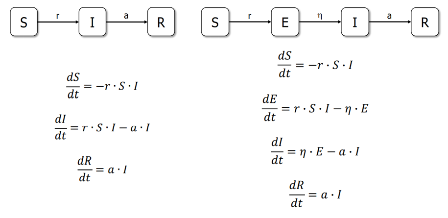
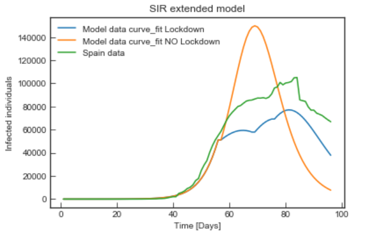

Modelling the time evolution of Covid-19
Source code GitHub
 The development of the Biological Systems Modelling course took place during the first lockdown. One of the main teaching blocks was compartmental models in epidemiology. These models assign the population to compartments with labels - S, (E,) I, or R (Susceptible, Exposed, Infectious, or Recovered). The models are run with differential equations and try to predict how disease spreads, the total numbered of infected, the duration of an epidemic, or estimate the reproductive number or the infection rate, among others.
The Project
The goals of the project were determining if the SIR and SEIR epidemic models could predict the time evolution of the Covid-19 in Spain and how they could be improved to do so better. We decided to model and study the effect of quarantine (confinement) and include relevant parameters from more complex systems such as age group, lifestyle and routines to create what we called the Mobility Mapping. We concluded that representing the influence of human behaviours over the infectivity rate and the several social distancing measures leads to a better predictive model.
